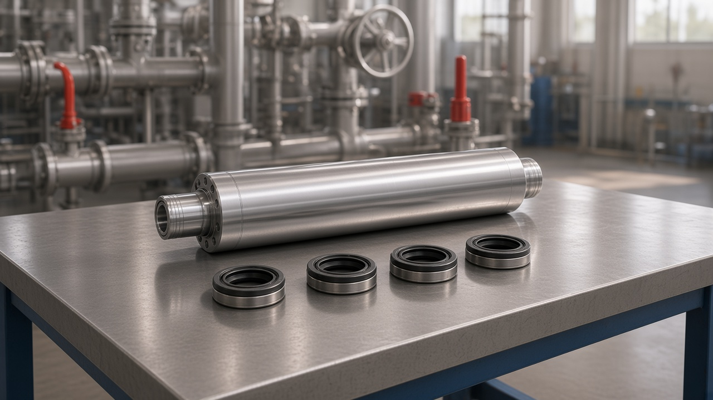
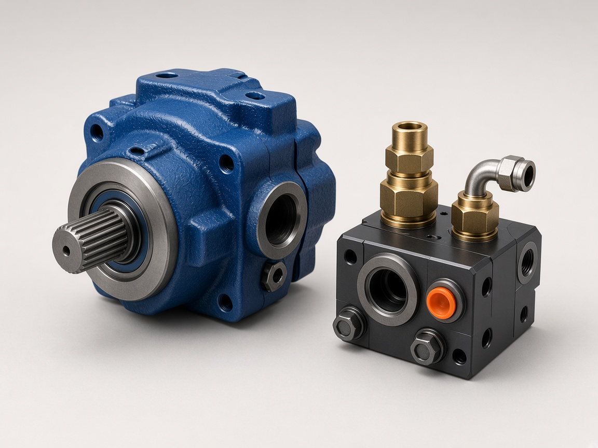

Seals
Shaft seals quoted with the hoses, fittings and hydraulic parts on this page.
Hydraulic parts supplier in China for pumps, valves, cylinders, seals, hoses, fittings and maintenance spare parts. Send model numbers or specifications for export quotation. Orders are exported from Nansha, Guangzhou to the Middle East, Europe, the United States, and other markets. Price, lead time, packing, and freight are confirmed in the written quotation.


Hydraulic pumps, valves, cylinders, hoses and seals are used on production equipment and hydraulic power units. Include the model number or a nameplate photo and the destination country.
Send your product type, part number, quantity, and destination country. Our sales team will confirm availability, lead time, and export-ready pricing.
We focus on practical industrial sourcing: exact model matching, clear alternatives when approved, and consolidated shipping for mixed-category orders.
These examples help buyers search and request quotes. Availability changes by market and date, so please send the exact model number for confirmation.
Send the manufacturer, exact model or part number, quantity, destination country, and required delivery date. Availability, price, lead time, and freight are confirmed in the written quotation.
Please send the model number, nameplate photo, pressure or flow details, quantity, and destination country. Photos help when markings are incomplete.
Yes. We frequently consolidate hydraulic, automation, electrical, and mechanical spare parts for one export shipment.
Use these pages when your purchase includes several product families.
Yes. Orders are exported from Nansha, Guangzhou, China to the Middle East, Europe, the United States, and other markets. The written quotation confirms availability, price, lead time, packing, and freight for the destination country. Include that country when you send the part number.